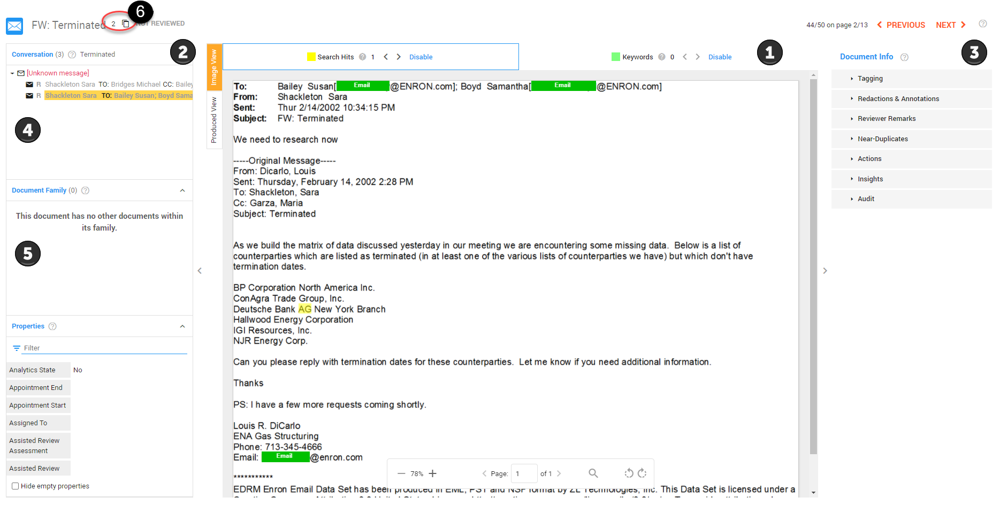
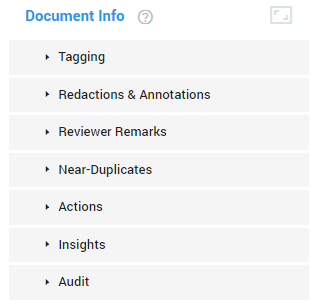

Once you’ve got a list of documents which may contain evidence,
you can start reviewing them. Click on the document to enter Document view.Document View
To view a document, simply select it from the list view grid from the Document List view.

The document viewer is divided between the document image (1), which can be viewed as either the processed image or in the 'as produced view', and informational panes (2) on the left, and action panes (3) on the right.
Use the directional arrows at the top of the screen to advance to the next document in your review.
In order to maximize review efficiency, ZyLAB ONE presents documents in context of their relationship to other documents. This means that when viewing an email, not only will you be able to see all attachments to that email, but also the entire email conversation or thread. In addition, the document properties (or the metadata) can be reviewed—see Conversation, Document Family & Fields to learn more.
Email Conversations (4) - The Conversation Panel is displayed when an email is viewed and shows the email thread of the email displayed in the document viewer. The email being viewed is highlighted in yellow within the thread.
Click on an email message to open it in
Document View
Families (5) - The Document Family panel is displayed when a non-email document is being viewed or if there are attachments to an email that is being viewed. The document being viewed is highlighted in yellow. Click on any document in the list to open it in the viewer.
Duplicates (6) – When viewing a document, ZyLAB ONE provides direct insight into exact duplicates of the document you are viewing. Select theicon to view the list of duplicates.
Tip: When hidden content is detected with ZyLAB’s Hidden Content, you are notified with the  icon next to the document name.
icon next to the document name.
Document information
Document Info enables you to perform several actions on the currently opened document.
Select the  icon to expand the Document Info pane.
Select
icon to expand the Document Info pane.
Select  to return to the default size.
to return to the default size.

|
|
Note: Sampling will appear as an action when the Sampling Wizard (Preview mode) is in use. For more information—see Sampling.
|